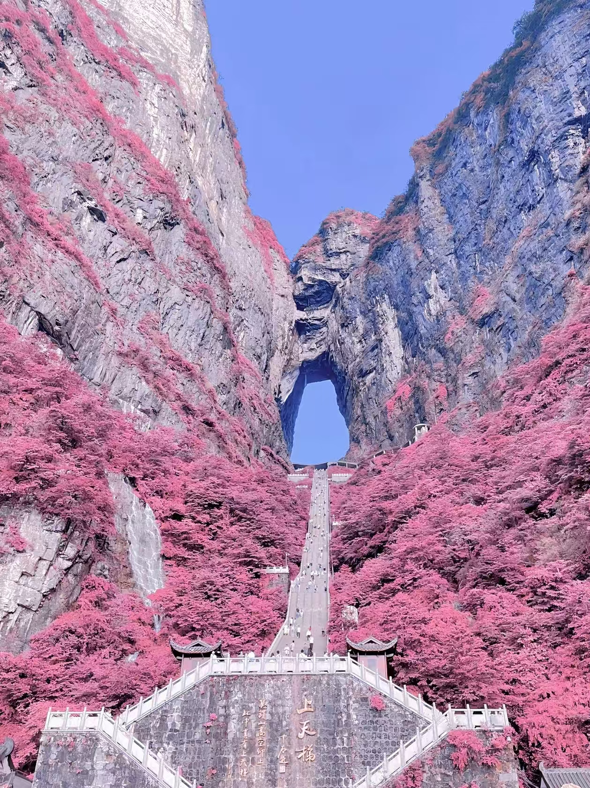
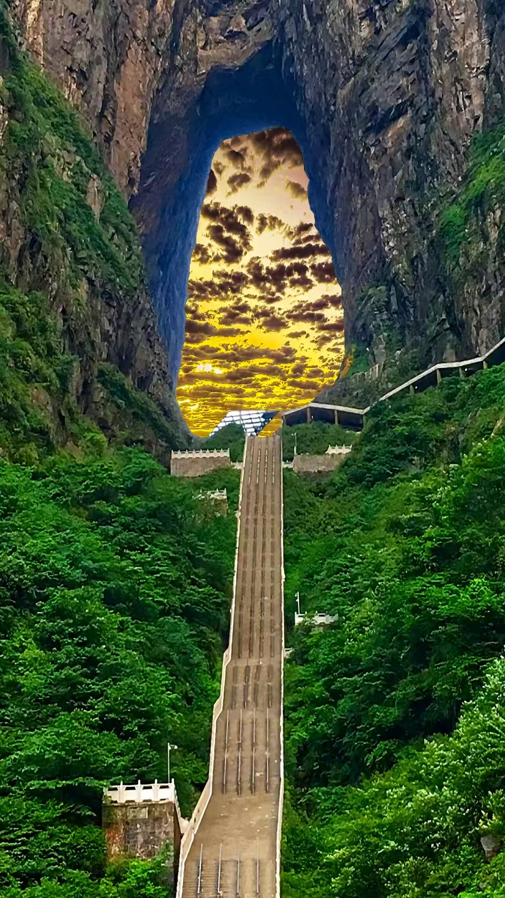
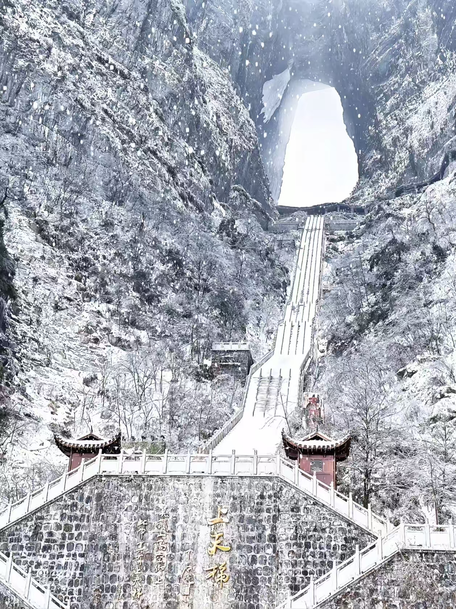
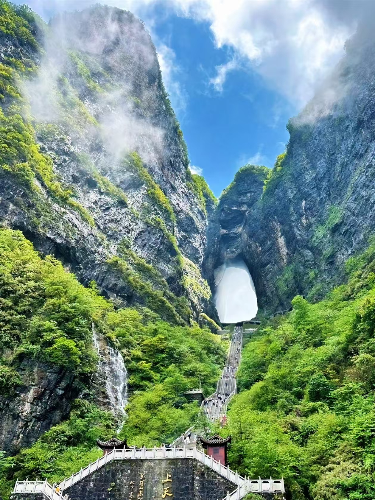

When James Cameron's team was looking for locations to inspire the floating mountains of Pandora, they came to Zhangjiajie. I found out why the moment the cable car climbed above the cloud layer and the peaks started appearing through the mist — thousands of narrow sandstone columns rising straight out of forested valleys, each one draped in vegetation, the whole thing looking genuinely alien. Nothing in any other landscape I've seen prepares you for it.
Zhangjiajie has two distinct areas worth visiting: Tianmen Mountain in the city, and Wulingyuan Scenic Area about 30km north where the Avatar peaks are. They require separate tickets and separate days. Budget at least 3-4 days for the region to do both properly.

The 999 steps leading up to Tianmen Cave — in autumn the surrounding trees turn pink and rust. The climb looks intimidating from below and is exactly as demanding as it looks.
Tianmen Mountain's defining feature is Tianmen Cave — a naturally formed arch 131 meters high and 57 meters wide near the summit. The approach is the famous staircase of 999 steps cut directly into the cliff face. I climbed it once and took the cable car down. The staircase is worth doing at least one direction: the views looking back down are extraordinary, and the sense of scale only becomes apparent when you're actually on the steps looking up at the arch above you.
The cable car is the world's longest mountain cable car at 7.5km, taking about 30 minutes from the city base station to the summit area. The ticket (¥278 including cable car) needs to be booked 3 days in advance through the official website or Trip.com. Morning departures before 9am have the best visibility — mountain weather changes quickly and afternoon mist frequently obscures the views.
At the summit there's a glass walkway that circles part of the cliff face — it's genuinely vertiginous, looking straight down through transparent panels to the valley floor. The shoe covers you're given before walking it are ¥10 extra and not optional. Don't expect to be offered them for free regardless of what you've read elsewhere.
Take Route A: cable car up, glass walkway, staircase down (or up if you prefer), environmental bus back to base. Route B reverses this. Most visitors find going down the staircase easier on the knees than ascending. Either way, wear shoes with proper grip — the steps are steep and can be slippery in damp weather.

Tianmen in winter — the 999 steps under snow look completely different from the summer version. The cave arch is visible year-round but winter visits require extra caution on the steps.

Tianmen Cave at sunset — the light through the arch changes color as the sun drops. This view is from inside looking out toward the valley.
Wulingyuan Scenic Area (¥228 for a 4-day pass including environmental buses) is where the sandstone pillar landscape that inspired Avatar is located. The area is large — you could spend three full days here and still not see everything. The main zones are Yuanjiajie (where the Hallelujah Mountain — the direct Avatar inspiration — is located), Tianzi Mountain, and Yangjiajie.
Yuanjiajie is the priority. Take the Bailong Elevator — the world's tallest outdoor elevator, climbing 326 meters up a sheer cliff face in about 1.5 minutes — to reach the plateau. The Hallelujah Mountain viewpoint is a 20-minute walk from the elevator top. When I stood there looking at that single column floating above the cloud layer, it was one of those moments where a place genuinely exceeds its reputation.
The environmental buses run constantly between zones and are included in your ticket. Don't try to walk between areas — the distances are too large and the terrain too challenging. Use the buses and save your energy for the actual trails and viewpoints.
Jinbian Stream (Golden Whip Stream) is a 7.5km valley walk following a stream between the pillar formations. It's the gentlest terrain in the whole park and the most accessible for people who aren't keen on steep hiking. I noticed significantly fewer crowds here than at the elevated viewpoints, even in peak season.
April and May bring frequent rain and mist that can obscure the peaks entirely. In my experience this is actually when the landscape is most atmospheric — mist between the columns is how the Avatar designers conceived it — but if you specifically want clear views and photography, September to November is more reliable. Avoid Golden Week in early October if crowds concern you.

Zhangjiajie Grand Canyon Glass Bridge (¥178) is a separate attraction from both Tianmen and Wulingyuan, located about 40 minutes from the city. At 430 meters long and 300 meters above the canyon floor, it holds several world records for glass bridge construction. Walking across it — the transparent panels showing a sheer drop directly beneath your feet — is the kind of experience that reveals very quickly how you actually feel about heights.
Book well in advance through Trip.com or the official site. Bags and shoes are checked before entry; high heels and hard-soled shoes are not permitted. The canyon walk below the bridge is included in the ticket and takes about 2 hours — worth doing for the view back up to the bridge overhead.
The "¥199 all-inclusive tour" signs near the train station and city hotels are the most consistent scam in Zhangjiajie. These packages compress the major attractions into a rushed schedule and include mandatory stops at souvenir shops where your guide receives commission. The officially licensed direct buses to Wulingyuan from the city cost ¥20 per person and take you directly where you want to go without detours.
Eating inside Wulingyuan costs significantly more than in the city — bring snacks and water, or eat breakfast and dinner in town. The Xibujie (溪布街) area near the scenic zone entrance has reasonable restaurants without the park markup.
Silver jewelry, tea and dried mushrooms near scenic entrances are marked up three to five times compared to prices in regular city shops or supermarkets. If you want to buy local products, do it in the city before or after your park visits.
Tujia cuisine is the local food tradition — hearty, smoky and considerably spicier than what you'd find in eastern China. San Xia Guo (三下锅) is the signature dish: preserved pork belly, offal and tofu cooked together in a single pot with chili. It sounds confronting and tastes better than you'd expect. Hu Shifu San Xia Guo near the city center is a reliable spot, budget around ¥50 per person.
Ge Gen Fen (葛根粉) is a local starch drink made from kudzu root — ordered sweet or savory, eaten at breakfast. Rock ear mushroom (岩耳) stewed with chicken is another local specialty worth ordering once: the mushrooms grow on clifffaces in the park and have a distinctive mineral flavor.
High-speed trains run to Zhangjiajie West Station from Changsha (about 2 hours), which connects to major cities. From Beijing it's about 6 hours. From Shanghai about 5 hours via Changsha. Within the city, DiDi is reliable. The official tourist bus to Wulingyuan leaves from the city transportation hub — ¥20, about 45 minutes.
Wear proper walking shoes with grip. The terrain is uneven, stairs are steep and rainfall makes surfaces slippery. A rain jacket is more practical than an umbrella in mountain conditions. Bring a portable charger — the park is large and you'll be navigating and photographing constantly.